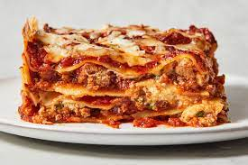

Lasagna recipe

How to make lasagna
Making lasagna can be time-consuming, but the results are well worth the wait. You'll find a detailed ingredient list and step-by-step instructions in the recipe below, but let's go over the basics:
Lasagna Ingredients
- Meat: This super meaty lasagna has sweet Italian sausage and lean ground beef.
- Onion and garlic: An onino and two cloves of garlic are cooked with the meat to add tons of flavor
- Tomato products: You'll need a can of crushed tomatoes, two cans of tomato sauce and two cans of tomato past
- Sugar:Two tablespoons of white sugar add subtle sweetness and enhance the flavor of the sauce
- Cheeses:Parmesan, mozzarella, and ricotta cheese make this lasagna extra decadent.
- Spices and seasonings:This lasagna recipe is flavored with fresh parsley, dried basil leaves, salt, Italian seasoning, fennel seeds, and black pepper
- Lasagna noodles: Use store-bought or homemade lasagna noodles
- Egg: An egg helps bind the ricotta so it doesn't ooze out the lasagna when you cut into it
Steps To Make
- make the meat sauce
- cook the noodles
- make the ricotta
- layer the lasagna
- cover with foil and bake
- let the lasagna rest before consuming